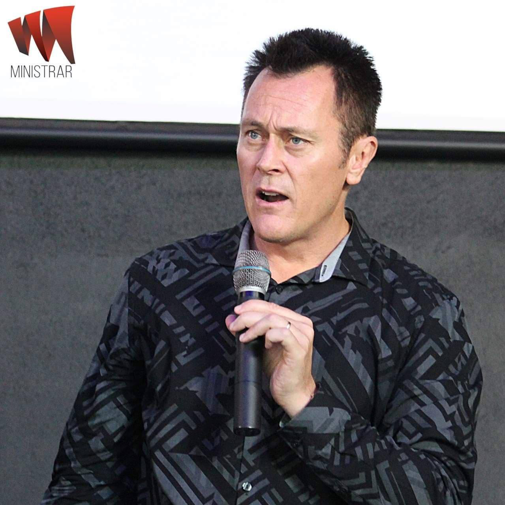

Australia

Reverend Dr. Robert Clancy
The Narrow Path Ministries
Missionary / Revivalist / Church Planter / Pastor
He has ministered in Asia, Africa, India, South America, USA and in Australia, which is his country of orgin.
Barbara Miller
Founder of Center for International Reconciliation & Peace and Tabernacle of David in Cairns, Australia
Psychologist / Sociologist / Mediator / Teacher / Writer
Tabernacle of David YouTube channel
Visit Tabernacle of David
Email: cfirp@bigpond.com
Phone: Barbara 0466 076 020
Phone: Norman 0407 128 199
Click to purchase Barbara's books
Faith City Outreach Podcasts